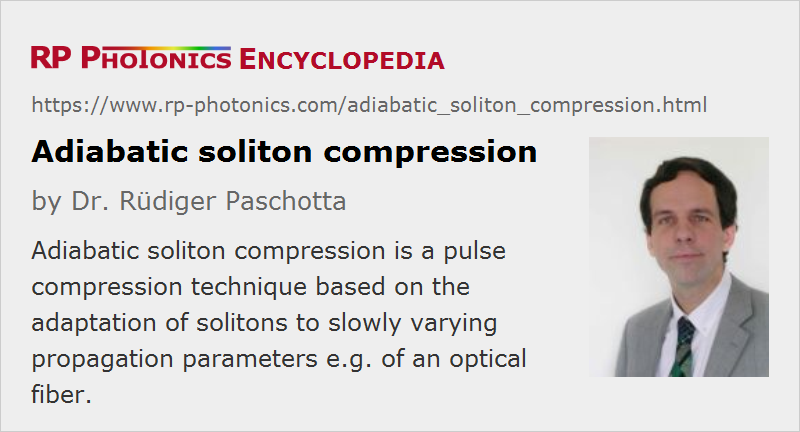

Adiabatic Soliton Compression
Definition: a pulse compression technique based on the adaptation of solitons to slowly varying propagation parameters
More general term: pulse compression
German: adiabatische Solitonenkompression
Categories: fiber optics and waveguides, light pulses
How to cite the article; suggest additional literature
Author: Dr. Rüdiger Paschotta
Adiabatic soliton compression is a technique for the temporal compression of ultrashort pulses in a fiber. The principle of operation is described in the following. For a fundamental soliton pulse in a fiber, the product of pulse energy and pulse duration is proportional to the group velocity dispersion divided by the nonlinearity of the fiber. Thus, the pulse duration must be reduced if the dispersion is reduced while keeping constant the pulse energy. Significant pulse compression can therefore be obtained by propagating the pulses through a dispersion-decreasing fiber. However, the following conditions must be satisfied:
- The initial pulses must fulfill the soliton condition at the input fiber end.
- The fiber dispersion must be varied sufficiently slowly to allow adiabatic adaptation of the pulses to the fiber parameters (otherwise, the pulses can become distorted). More precisely stated, the dispersion must not vary significantly over a length scale of a soliton period. As the latter scales with the square of the pulse duration, rather long fibers are required if the initial pulses are longer than e.g. 1 ps.
- The fiber dispersion must stay sufficiently constant over the whole spectral range of the compressed pulses. In other words, higher-order dispersion must be sufficiently weak. However, it has been shown that slightly normal dispersion in the wings of the generated pulse spectrum can be beneficial.
Interestingly, there are situations where Raman scattering and higher-order dispersion combine in such a way that the pulse compression stays adiabatic, even though each of the mentioned effects separately would lead to severe pulse distortion [5].
Even though the method is elegant and powerful, it suffers from the need to use a dispersion-decreasing fiber. The latter requirement is eliminated by a variant of the method, where the fiber has constant dispersion but contains a laser-active dopant which allows the amplification of the pulses. Here, an increasing pulse energy for constant dispersion also results in temporal compression.
Instead of using a dispersion-decreasing fiber, it is also possible to concatenate (fusion-splice) different fibers with different dispersion values. This may lead to more reproducible results, but as the dispersion does not vary continuously, the compression factor and/or the pulse quality can be compromised.
Generally, adiabatic soliton compression is limited to fairly low pulse energies, since the soliton energies of pulses in fibers cannot be made very high. Therefore, the technique is mainly applied to high repetition rate pulse trains, e.g. in the context of optical fiber communications.
Questions and Comments from Users
Here you can submit questions and comments. As far as they get accepted by the author, they will appear above this paragraph together with the author’s answer. The author will decide on acceptance based on certain criteria. Essentially, the issue must be of sufficiently broad interest.
Please do not enter personal data here; we would otherwise delete it soon. (See also our privacy declaration.) If you wish to receive personal feedback or consultancy from the author, please contact him e.g. via e-mail.
By submitting the information, you give your consent to the potential publication of your inputs on our website according to our rules. (If you later retract your consent, we will delete those inputs.) As your inputs are first reviewed by the author, they may be published with some delay.
Bibliography
| [1] | H. H. Kuehl, “Solitons on an axially nonuniform optical fiber”, J. Opt. Soc. Am. B 5 (3), 709 (1988), doi:10.1364/JOSAB.5.000709 |
| [2] | K. Smith and L. F. Mollenauer, “Experimental observation of adiabatic compression and expansion of soliton pulses over long fiber paths”, Opt. Lett. 14 (14), 751 (1989), doi:10.1364/OL.14.000751 |
| [3] | S. V. Chernikov and P. V. Mamyshev, “Femtosecond soliton propagation in fibers with slowly decreasing dispersion”, J. Opt. Soc. Am. B 8 (8), 1633 (1991), doi:10.1364/JOSAB.8.001633 |
| [4] | S. V. Chernikov et al., “Picosecond soliton pulse compressor based on dispersion decreasing fiber”, Electron. Lett. 28, 1842 (1992), doi:10.1049/el:19921175 |
| [5] | P. V. Mamyshev et al., “Adiabatic compression of Schrödinger solitons due to the combined perturbations of higher-order dispersion and delayed nonlinear response”, Phys. Rev. Lett. 71 (1), 73 (1993), doi:10.1103/PhysRevLett.71.73 |
| [6] | S. V. Chernikov et al., “Soliton pulse compression in dispersion-decreasing fiber”, Opt. Lett. 18 (7), 476 (1993), doi:10.1364/OL.18.000476 |
| [7] | M. L. Quiroga-Teixeiro et al., “Efficient soliton compression by fast adiabatic amplification”, J. Opt. Soc. Am. B 13 (4), 687 (1996), doi:10.1364/JOSAB.13.000687 |
| [8] | K. Mori et al., “Flatly broadened supercontinuum spectrum generated in a dispersion decreasing fiber with convex dispersion profile”, Electron. Lett. 33, 1806 (1997), doi:10.1049/el:19971184 |
| [9] | A. Mostofi et al., “Optimum dispersion profile for compression of fundamental solitons in dispersion decreasing fibers”, IEEE J. Quantum Electron. 33 (4), 620 (1997), doi:10.1109/3.563391 |
| [10] | K. R. Tamura and M. Nakazawa, “54-fs, 10-GHz soliton generation from a polarization-maintaining dispersion-flattened dispersion-decreasing fiber pulse compressor”, Opt. Lett. 26 (11), 762 (2001), doi:10.1364/OL.26.000762 |
| [11] | F. K. Fatemi, “Analysis of nonadiabatically compressed pulses from dispersion-decreasing fiber”, Opt. Lett. 27 (18), 1637 (2002), doi:10.1364/OL.27.001637 |
| [12] | M. L. V. Tse et al., “Pulse compression at 1.06 μm in dispersion-decreasing holey fibers”, Opt. Lett. 31 (23), 3504 (2006), doi:10.1364/OL.31.003504 |
| [13] | J. Lægsgaard and P. J. Roberts, “Theory of adiabatic pressure-gradient soliton compression in hollow-core photonic bandgap fibers”, Opt. Lett. 34 (23), 3710 (2009), doi:10.1364/OL.34.003710 |
| [14] | Z Y. Huang et al., “Ionization-induced adiabatic soliton compression in gas-filled hollow-core photonic crystal fibers”, Opt. Lett. 44 (22), 5562 (2019), doi:10.1364/OL.44.005562 |
See also: solitons, pulses, pulse compression, dispersion-decreasing fibers
and other articles in the categories fiber optics and waveguides, light pulses
|  |
If you like this page, please share the link with your friends and colleagues, e.g. via social media:
These sharing buttons are implemented in a privacy-friendly way!